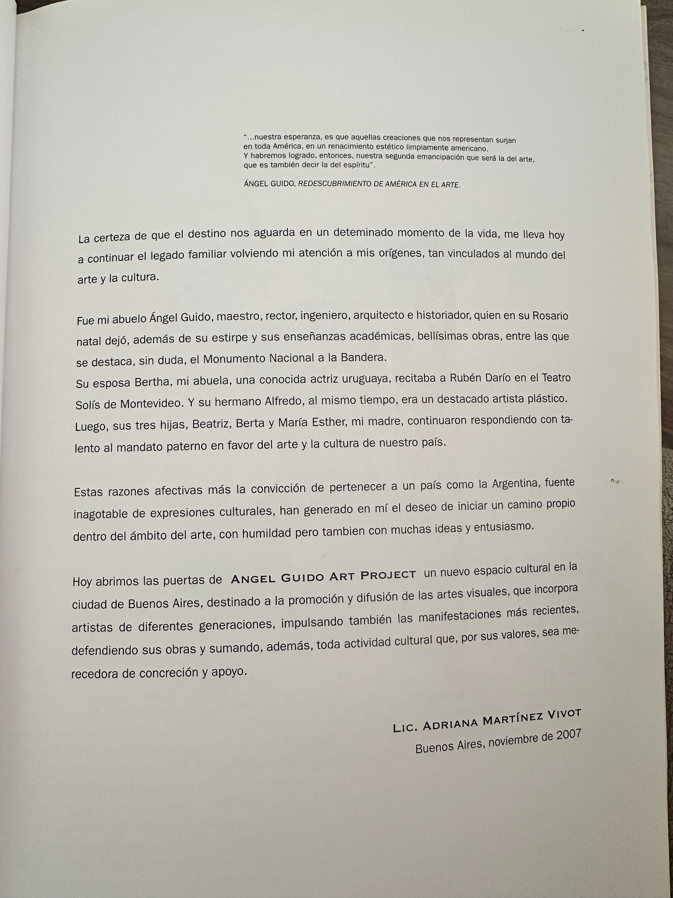

Identidad
Una mirada americana, argentina y profundamente vinculada con su tiempo.
Patrimonio · Pensamiento · Cultura argentina
Arquitectura · Literatura · Cine · Artes visuales · Gestión cultural

El proyecto
“La historia del arte descubre su corazón.”
Ángel Guido Art Project nace de una convicción: preservar una historia familiar profundamente ligada al arte y a la cultura argentina.
Desde Ángel Guido hasta Adriana Martínez Vivot, cada generación encontró su propia manera de crear, promover y sostener la vida cultural.
Una mirada americana, argentina y profundamente vinculada con su tiempo.
La cultura entendida como pensamiento, obra y acción.
Conservar documentos, obras y memorias para volver a ponerlos en circulación.
Un mismo compromiso cultural expresado por distintas generaciones.
Linaje cultural

“Nuestra esperanza es que aquellas creaciones que nos representan surjan en toda América.”
Ángel Guido · Redescubrimiento de América en el arteColección y archivo
Un patrimonio familiar en proceso de investigación, catalogación y apertura.

